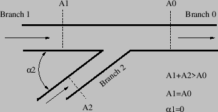
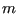
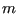

Keyword type: step
This procedure is used to calculate the steady state response of a structuresubject to periodic loading. Although the deformation up to the onset of thedynamic calculation can be nonlinear, this procedure is basically linear andassumes that the response can be written as a linear combination of the lowestmodes of the structure. To this end, these modes must have been calculated ina previous *FREQUENCY,STORAGE=YES step (not necessarily in the same calculation). In the*STEADY STATE DYNAMICS step the eigenfrequencies, modes, stiffness and massmatrix are recovered from the file jobname.eig.
For harmonic loading the steady state response iscalculated for the frequency range specified by the user. The number of datapoints within this range  can also be defined by the user, default is 20,minimum is 2 (if the user specifies to be less than 2, the default is taken). Ifno eigenvalues occur within the specified range, this is the total number ofdata points taken, i.e. including the lower frequency bound and theupper frequency bound. If one or more eigenvalues fall within the specified range,  points are taken in between the lower frequency bound and the lowest eigenfrequencyin the range,
points are taken in between the lower frequency bound and the lowest eigenfrequencyin the range,  between any subsequent eigenfrequencies in the range and
between any subsequent eigenfrequencies in the range and points in between the highest eigenfrequency in the range and upperfrequency bound. Consequently, if  eigenfrequencies belong to the specifiedrange,
points in between the highest eigenfrequency in the range and upperfrequency bound. Consequently, if  eigenfrequencies belong to the specifiedrange,  data points are taken. They are equally spacedin between the fixed points (lower frequency bound, upper frequency bound andeigenfrequencies) if the user specifies a bias equal to 1. If a different biasis specified, the data points are concentrated about the fixed points. Defaultfor the bias is 3., minimum value allowed is 1. (if the user specifies a valueless than 1., the default is taken).The number of eigenmodes used is taken from the previous *FREQUENCYstep. Since a steady state dynamics step is a perturbation step, all previous loadingis removed. Theloading defined within the step is multiplied bythe amplitude history for each load as specified by the AMPLITUDE parameter onthe loading card, if any. In this context the AMPLITUDE cards are interpretedas load factor versus frequency. Loading histories extending beyond the amplitudefrequency scale are extrapolated in a constant way. The absence of theAMPLITUDE parameter on a loading card leads to a frequency independent load.
data points are taken. They are equally spacedin between the fixed points (lower frequency bound, upper frequency bound andeigenfrequencies) if the user specifies a bias equal to 1. If a different biasis specified, the data points are concentrated about the fixed points. Defaultfor the bias is 3., minimum value allowed is 1. (if the user specifies a valueless than 1., the default is taken).The number of eigenmodes used is taken from the previous *FREQUENCYstep. Since a steady state dynamics step is a perturbation step, all previous loadingis removed. Theloading defined within the step is multiplied bythe amplitude history for each load as specified by the AMPLITUDE parameter onthe loading card, if any. In this context the AMPLITUDE cards are interpretedas load factor versus frequency. Loading histories extending beyond the amplitudefrequency scale are extrapolated in a constant way. The absence of theAMPLITUDE parameter on a loading card leads to a frequency independent load.
For nonharmonic loading the loading across one period is not harmonic and hasto be specified in the time domain. To this end the user can specify thestarting time and the final time of one period and describe the loading withinthis period with *AMPLITUDE cards. Default is the interval  and steploading. Notice that for nonharmonic loading the *AMPLITUDE cards describeamplitude versus TIME. Furthermore, the user can specify the number of Fourierterms the nonharmonic loading is expanded in (default:20). The remaining input is the same as for harmonic loading, i.e. theuser specifies a frequency range, the number of data points within this rangeand the bias.
and steploading. Notice that for nonharmonic loading the *AMPLITUDE cards describeamplitude versus TIME. Furthermore, the user can specify the number of Fourierterms the nonharmonic loading is expanded in (default:20). The remaining input is the same as for harmonic loading, i.e. theuser specifies a frequency range, the number of data points within this rangeand the bias.
There are two optional parameters: HARMONIC and SOLVER. HARMONIC=YES (default)indicates that the periodic loading is harmonic, HARMONIC=NO specifiesnonharmonic periodic loading. The parameter SOLVER determines thepackage used to solve for the steady state solution in the presence of nonzerodisplacement boundary conditions. The following solverscan be selected:
Default is the first solver which has been installed of the following list:SGI, PARDISO, SPOOLES and TAUCS. If none is installed, an error is issued.
The SGI solver should by now be considered as outdated. SPOOLES is very fast, but has noout-of-core capability: the size of systems you can solve is limited by yourRAM memory. With 2GB of RAM you can solve up to 250,000 equations. TAUCS isalso good, but my experience is limited to the  decomposition, whichonly applies to positive definite systems. It has an out-of-core capabilityand also offers a
decomposition, whichonly applies to positive definite systems. It has an out-of-core capabilityand also offers a  decomposition, however, I was not able to run either ofthem so far. PARDISO is the Intel proprietary solver and is to my knowledgepresently the fastest.
decomposition, however, I was not able to run either ofthem so far. PARDISO is the Intel proprietary solver and is to my knowledgepresently the fastest.
First line:
Example: *STEADY STATE DYNAMICS 12000.,14000.,5,4.
defines a steady state dynamics procedure in the frequency interval with 5 data points and a bias of 4.
Example: *STEADY STATE DYNAMICS,HARMONIC=NO 2.,4.,3,1.,11,0.,.5
defines a steady state dynamics procedure in the time domain. A completeperiod is defined in the time interval [0.,0.5], and 11 Fourier terms will betaken. Calculations will be performed for three equidistant points in thefrequency interval [2.,4.], i.e. for 2 cycles/time, 3 cycles/time and 4cycles/time, provided there are no eigenfrequencies in this interval.
Example files: beamdy8, beamdy9, beamdy10, beamdy11, beamdy12, beamdy13.